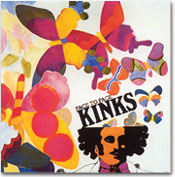

|

前回、クレーやカンディンスキーの絵を見ると音楽が聞こえる、ということを書いた。人のたたずまいや風景、建築物、あるいはその廃墟にさえ、音楽を感じることがあると告白した。そんなふうに一つの感覚（視覚）から刺激を受けると、他の感覚（聴覚）も刺激を受けているように感じることを、「共感覚」と呼ぶらしい。視覚、聴覚、臭覚など、異なる感覚間で同時反応を起こすのだという。
それなら、逆に「音楽や音を聴くと色が見える」ということもあっていい。事実、そういう体験をする人が演奏家を中心に多いようだ。わたしもその一人である。赤や青といった色だけでなく、「天使が降りてくる」「海が見える」と具体的な情景まで語る人もいる。絵や写真や実際の風景を見て音楽が聞こえるのと、表裏の反応だ。
絵を見て聞こえる音楽も、音楽を聴いて見える色も、人それぞれだ。19世紀後半から20世紀初頭にかけてのロシアの作曲家、リムスキー・コルサコフとスクリャービンは、それぞれ独自に調や音階の音と色を対応させている。前者の場合、ドで始まるハ長／短調（C）は白、レで始まる二長／短調（Ｄ）は黄色、ミのホ長／短調（Ｅ）は青、ファのヘ長／短調（Ｆ）は緑……。後者では、ドレミのドは赤、レは黄色、ミは純白、ファは暗い赤……。だいぶ違う。その他にもいろいろな人が対応表を発表しているが、違って当然だろう。イギリスのジャズ・ピアニスト、マリアン・マクパートランドは言う。「音楽は音の組み合わせ以上のものだし、色でもある。調が変われば、虹のように色も変わる。二長調はラッパスイセンの黄色、ロ長調は栗色、ロ短調は青というように」。ちなみに、この三人、「レ」あるいは「レで始まる音階＝二長調」が黄色で一致しているが、実はわたしもまったく同感である。レと二長調は、誰が何と言おうが、わたしの中では黄色なのだ。
それを意識したのは、まだ小学生か中学生の頃、ピアノでハイドンの二長調のソナタを弾いたときからだと思う。いわゆる「ソナタ・アルバム１」の第３番、とても快活で潔い感じの曲だ。この曲については、明るく元気なくっきりとした黄色の印象が当初からあった。それ以来、二長調＝黄色、そしてその主音であるレも黄色、というイメージがわたしの中でできあがった。「ドレミのうた」で「レはレモンのレ」と歌う。そこにはたぶん何の因果関係もないだろうが、この歌のせいで「レは黄色」のイメージを持つようになった人も少なからずいると思う。
そういえば、子供の頃、音楽教室や学校の音楽で「色おんぷ」を使って音符を覚えた記憶がある。ドレミの音階が全部ちがう色で、カラー・マグネットを五線のボードに並べたり、白ぬきの音符に色をぬったりした。また、おもちゃの鉄琴などは、カラフルに塗り分けられていたと思う。ひょっとして、幼児期のそういう記憶が、無意識にドは赤、レは黄色……というような刷り込みをしているかもしれない。
ある曲を聴くといつも、ある特定の色が見えるというとき、案外その曲にまつわる過去の記憶が結びついているものだ。その曲をはじめて聴いた店の壁の色。飾ってあった花の色。向かいにすわった彼のシャツの色。あるいは、そのレコードなりCDのジャケットの色。特定の色だけでなく、極彩色の万華鏡をのぞいているような擬視体験もあるだろう。たとえばジェファーソン・エアプレイン、ドアーズといった60年代のサイケデリック・ロックや、インド音楽、インドネシアのガムラン音楽等々。サイケの模様や民族衣装などを通して知っているそれらの極彩色のイメージが先にあると、音だけ聴いてもそんな色つきの音楽に聞こえるのかもしれない。
そうした無意識の連想とは別に、純粋に音や音楽を聴いて見える色があるのも確かだ。何の先入観もなく、はじめて聴いた曲に色を感じる場合がそうだ。上記のロックやガムランだって、何の知識もなく音だけはじめて聴いた人が極彩色のきらめく世界を目に浮かべるかもしれない。なぜ、音を聴いて色が見えるのだろう？
多くの人たちが、ドは何色、レは何色、ハ長調は、ト長調は……とドレミの音階と自分なりの感じた色を対応させているが、世界の音楽はドレミの音階だけでできているわけではない。無数の独特な音階や旋法があるし、様々な音を出す民族楽器がある。また、そうした楽音以外の自然や生活の中の様々な音がある。それらすべての音について、それに対応する無限の色彩を感じ取ることは可能である。キャーキャーと甲高い声を「黄色い声」というが、これも先人たちが感じた印象なのだろうか？
音が色を帯びるのは、結局、先に書いた「共感覚」という能力のなせる技らしい。「黄色い声」が聴覚と視覚とのリンクであれば、「甘い声」「甘酸っぱい歌声」は味覚とのリンクである。盲目のピアニスト、梯剛之さんが、TV番組の中で「匂いで何かを思い出すように、音楽で何かを思い出す、そんな匂いのような音楽を奏でたい」というような話をしておられたが、それこそ聴覚と臭覚のリンクである。そして聴覚は、五感の最後の一つ、触覚とももちろんつながっている。硬い音、柔らかい音、ざらついた音、つるつるの音、ぶよぶよの音、温かい音、冷たい音……。その他、笑っている、泣いている、生き生きした、沈んだ、悲痛な……なども含め、「音」にはあらゆる形容詞がつけられる。言い換えれば、音は変幻自在。どんな姿、形、表情にもなりうる――どんなふうにも表現され、どんなふうにも感じ取れるのである。
それはすべて音楽に関わる人――作る人、演奏する人、聴く人（もちろん、三者が重なる場合も多々ある）――の感性の反映であると、わたしは思う。所詮、音とは、発音体の振動を受けた空気の波動が耳に達して、鼓膜を刺激して生じるものだ。そんな無機質なものに色彩や様々な感触をまとわせるのは、人間の感性以外の何物でもない。一つの音や和音を、ボーンと鳴ったただの音ととらえる人と、そこに色や肌ざわり、表情を感じ取る人がいる。壁のしみや空の雲を、ただの汚れやただの雲と見る人と、絵模様や人や動物の形に見たてて楽しむ人がいる。本来人間はみな後者なのだと思う。子供の頃を思い出せば、おとなになって、そんな感性を失いかけていることにハッと気づく人がたくさんいるはずだ。「いろんな色のビー玉が転がってるみたいな音だね」「壁のおばけがこっち向いてるよ」「お空でおさかなの親子が泳いでる」そんな子供の感性を持ち続け、音や絵の具や自分の身体で表現しているのがアーティストと呼ばれる人たちだと、わたしは思う。そして、そうした表現を真摯に受け止め、自分のこととして引き受けられる感性豊かな人たちが世界中にたくさんいるからこそ、何世紀にもわたって音楽や美術が親しまれてきたのだと思う。
多くの人に「きわめて色彩的」「色彩豊か」な音楽と評されるのが、クラシックではドビュッシーやラヴェル――印象派と呼ばれる、19世紀末から20世紀初頭に活躍したフランスの作曲家たちの作品だ。もう少し後のメシアンなども色彩を強く意識した音楽で知られている（「天国の色彩」なんて曲もある）。ロシアのスクリャービンやストラヴィンスキーなども、色彩と無縁ではない。彼らの「色彩的」音楽は、様々な方法によって演出される。オーケストラの響きの工夫、ゴングや民族楽器、電子楽器など独特の音色を出す楽器の使用。ピアノの独奏曲でも、たとえばドビュッシーの「月の光」のように、まさに印象派の絵画を思わせるような光の粒状の音を散りばめたり、微妙なニュアンスの変化をつけた和音を連続させることで、色彩効果を出している。
それらのあくまでも「音で感じさせる色彩」をめざした音楽とは別に、実際に色そのものを音につけてしまった音楽が、スクリャービンの交響曲第５番「プロメテウス」だ。１オクターヴの12音にそれぞれ異なる色をあてはめた鍵盤楽器「色光ピアノ」なるものを使う。鍵盤を弾くと、それぞれの音に対応した色の光線が客席に投射されるというものだ。実際に「鑑賞」したことがあるが、色の光がバチバチするのと音楽とのつながりがよくわからなかったし、あまり心を動かされることもなかった。
目にも耳にも「色の洪水」を感じさせるものは多い。ド派手な衣装や舞台装置によるオペラやミュージカル（簡素な舞台もあるので……）、歌舞伎や中国の京劇。インドネシアのガムラン、韓国の農楽（ノンアク）、アフリカのダンス音楽、スペインのフラメンコ、リオのカーニバルでのサンバ等々、色とりどりの民族衣装をまとった世界各地の芸能や伝統音楽。あるいは70年代のピンク・フロイドやジェネシス、デヴィッド・ボウイなど、プログレやグラム・ロックのコンサート。ただ、最近のポップス系のコンサートやトランスなどクラブ系の音楽については、レーザー光線が飛び交い、たくさんのダンサーたちが舞い、まさに目には光と色の洪水だが、残念ながらわたしの耳には色が見えないことが多い。見えるとしたら、冷たい無機質の石の欠片かテラテラ光る金属の破片がバラまかれた世界だ。
演奏者と楽器しかない、薄暗いシンプルなステージで演奏されるジャズ、クラシック、「MTVアンプラグド」のようなポップス。色を抑えた世界に、色とりどりの音たちが舞う。ほんとうに純粋に音に色を感じるのは、むしろ、こんなシンプルな音楽なのかもしれない。
|